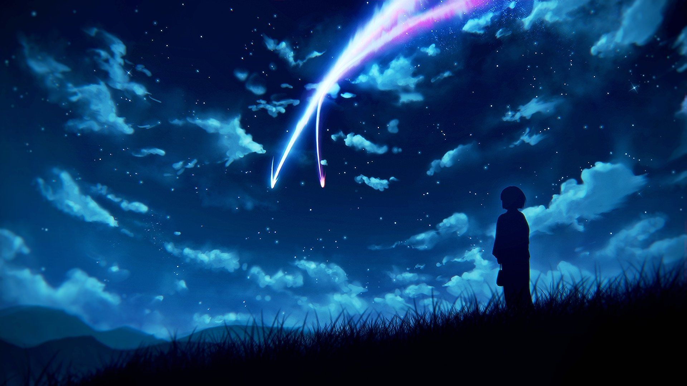
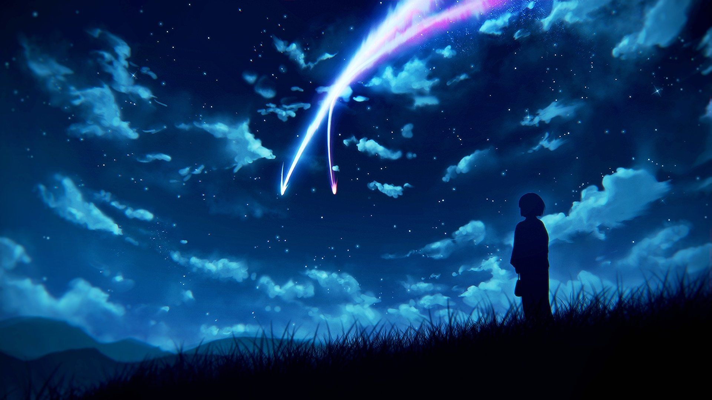

Your Name (Japanese: 君の名は。, Hepburn: Kimi no Na wa.) is a 2016 Japanese animated romantic fantasy film produced by CoMix Wave Films and released by Toho. It depicts a high school boy in Tokyo and a high school girl in the Japanese countryside who suddenly and inexplicably begin to swap bodies.

The film was commissioned in 2014, written and directed by Makoto Shinkai. It features the voices of Ryunosuke Kamiki and Mone Kamishiraishi, with animation direction by Masashi Ando, character design by Masayoshi Tanaka, and its orchestral score and soundtrack composed by Radwimps. A light novel of the same name, also written by Shinkai, was published a month prior to the film's premiere.
Your Name premiered at the 2016 Anime Expo in Los Angeles on July 3, 2016, and was theatrically released in Japan on August 26, 2016, and in the United States on April 7, 2017. It was critically acclaimed, with praise for the animation, music, and emotional weight. The film grossed over ¥41.44 billion (US$380.15 million) worldwide, becoming the highest grossing Japanese film of 2016, and the third highest-grossing anime film of all time, unadjusted for inflation.
The film won Best Animated Feature Film at 49th Sitges Film Festival, the 2016 Los Angeles Film Critics Association Awards, and the 71st Mainichi Film Awards, and was nominated for Best Animation of the Year at the 40th Japan Academy Prize. A live-action remake by Paramount Pictures set in the United States is currently in development.

 
